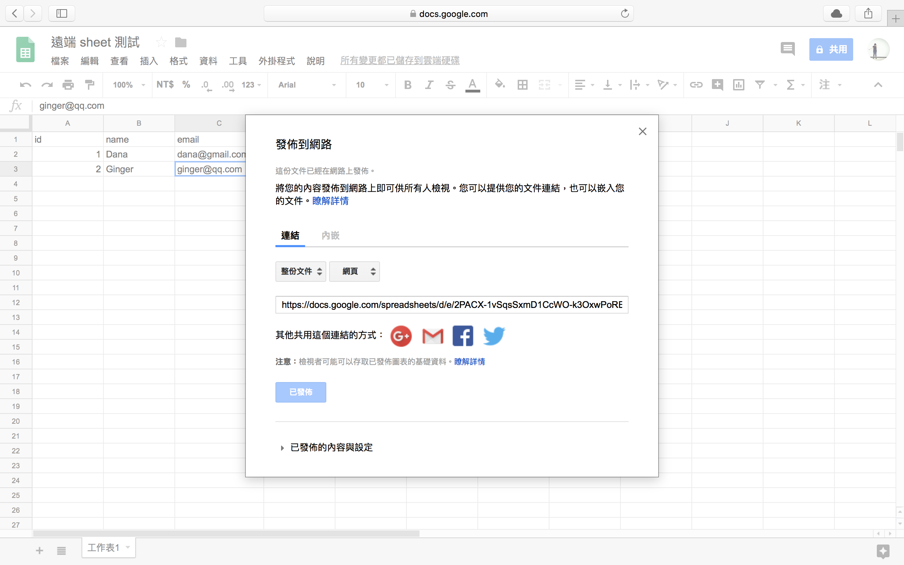
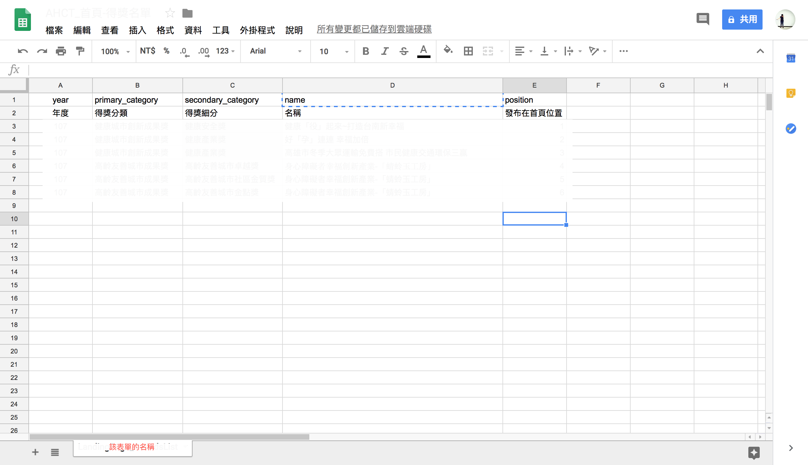
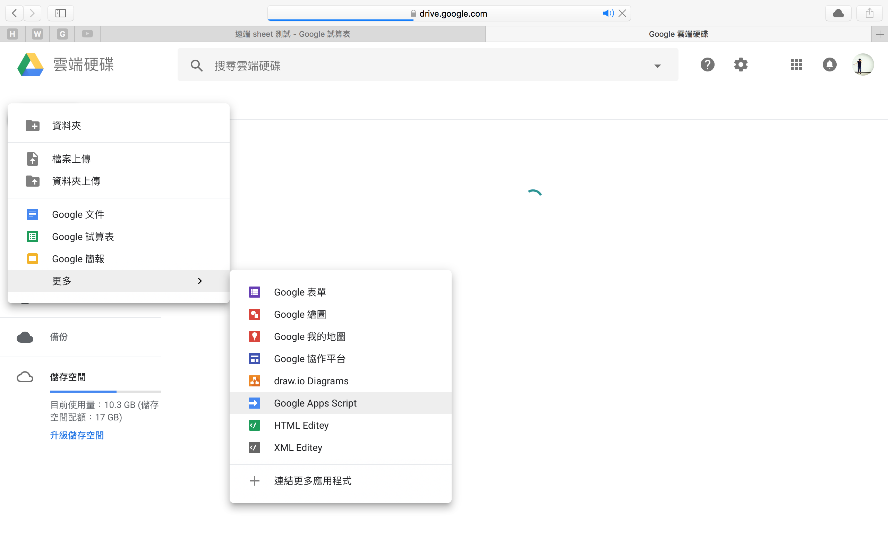
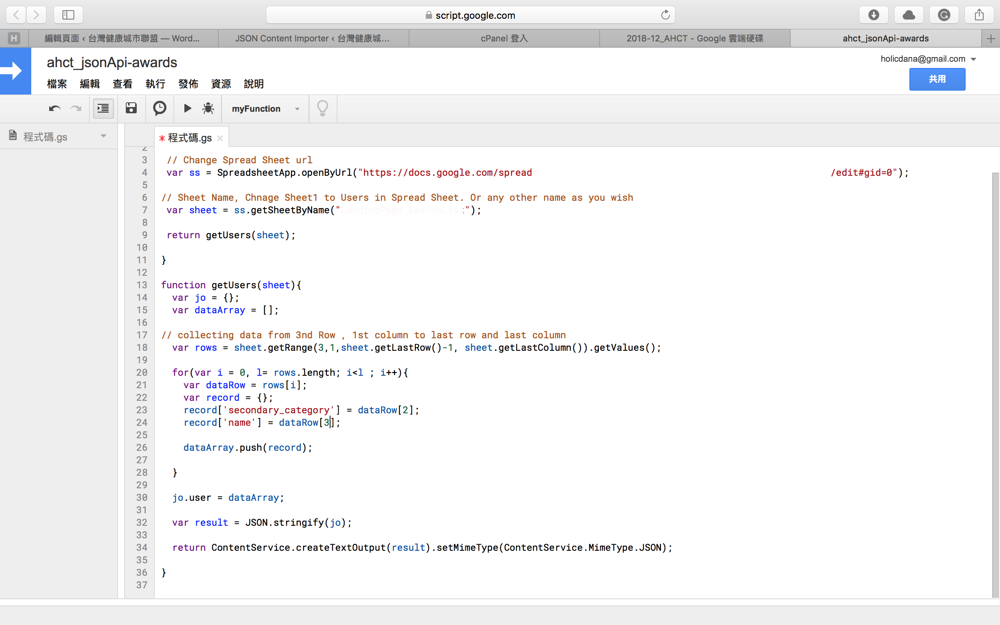
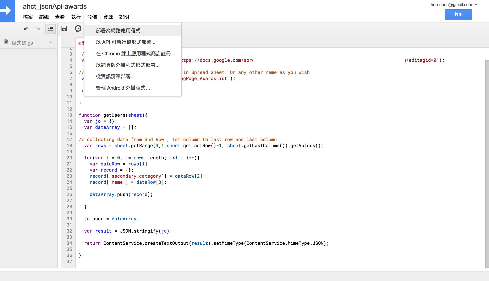
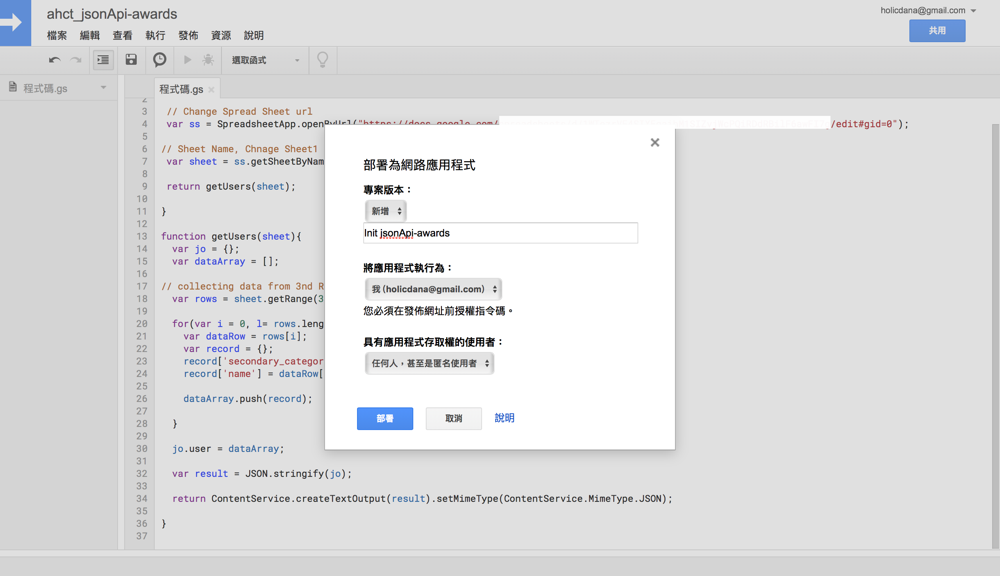
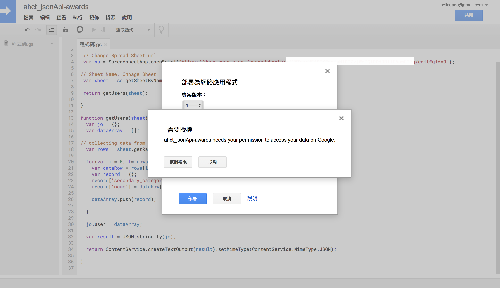
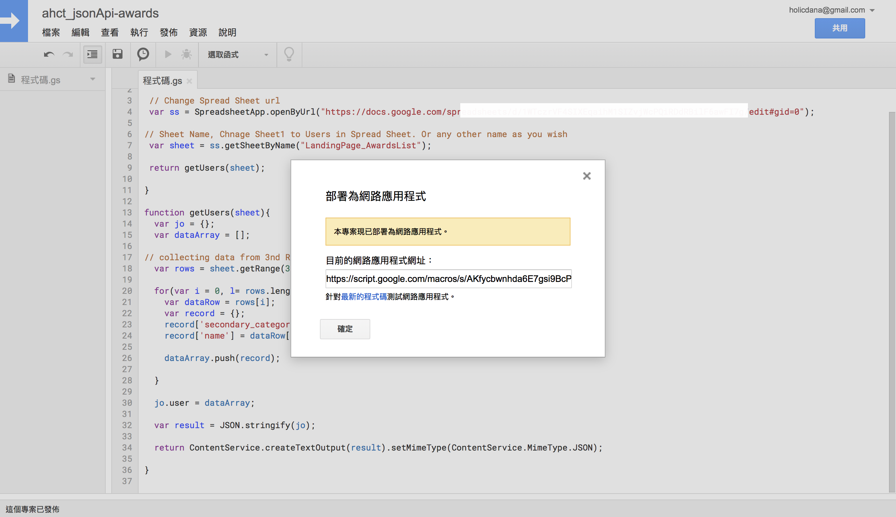
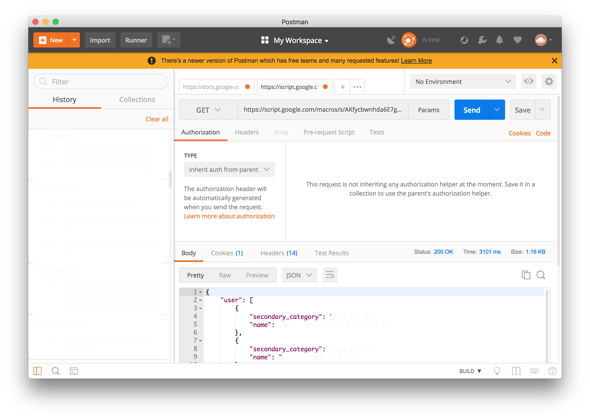

<!DOCTYPE html>
<html lang="en">
  <head>
    <meta charset="utf-8" />
    <meta name="viewport" content="width=device-width, initial-scale=1.0" />
    <meta
      name="description"
      content="Dana, / Front End Engineer's Mid-Night Kitchen"
    />

        <title>
use google sheet be simple CMS - Dana / Front End Engineer's Mid-Night Kitchen    </title>
     <link rel="icon" type="image/png" href="./favicon.ico" sizes="16x16" />
    <link
      rel="stylesheet"
      href="//cdnjs.cloudflare.com/ajax/libs/pure/0.3.0/pure-min.css"
    />
    <link
      rel="stylesheet"
      href="//cdnjs.cloudflare.com/ajax/libs/font-awesome/4.1.0/css/font-awesome.min.css"
    />
    <link rel="stylesheet" href="./theme/css/pure.css" />
    <link rel="stylesheet" href="./theme/css/my.css" />

    <link
      href="./theme/lightbox2/dist/css/lightbox.min.css"
      rel="stylesheet"
    />
<link rel="stylesheet" href="./theme/css/pygments.css">

    <script src="//cdnjs.cloudflare.com/ajax/libs/jquery/2.0.3/jquery.min.js"></script>
<script src="//cdnjs.cloudflare.com/ajax/libs/fitvids/1.0.1/jquery.fitvids.min.js"></script>
<script>
	$(document).ready(function () {
		$(".content").fitVids();
	});
</script>
  </head>

  <body>
<div class="pure-g-r" id="layout">
	<div class="sidebar sidebar-article pure-u">
		<header class="header-article">
			<hgroup>
				<!-- <a href="./author/dana.html" title="See posts by Dana">
                </a> -->
				<div class="avatarImg">
					<a href="/" title="See posts by Dana">
						
					</a>
				</div>

				<h2 class="article-info">Dana Chen</h2>
				<!-- <small class="about-author"></small> -->
				<small class="about-author">Coding, Baking<br>Front End Engineer's Mid-Night Kitchen</small>
				<h5>Published</h5>
				<!-- <p>Wed, 08 May 2019</p> -->
				<p>2019 05 08</p>
				<a href="/">&larr; Home</a>
			</hgroup>
		</header>
	</div>
	<div class="pure-u">
		<div class="content">
			<section class="post">
				<header class="post-header">
					<h1>use google sheet be simple CMS</h1>
					<p class="post-meta">
						<a class="post-category" href="./tag/code.html">code</a>
						<a class="post-category" href="./tag/js.html">js</a>
						<a class="post-category" href="./tag/google.html">google</a>
						<a class="post-category" href="./tag/google-excel.html">google excel</a>
						<a class="post-category" href="./tag/google-script.html">google script</a>
					</p>
				</header>
			</section>
			<p>前些日子接了一個 case，因為只有一個工程師加上一個設計，卻要完成有後台的網站</p>
<p>因此討論後決定用 wordpress + google sheet</p>
<p>以前寫程式時，很排斥 wordpress 覺得這都是個速成的東西，讓專業變成不專業</p>
<p>但實際研究過後，發現真的是很速成的東西呢！！許多 server 的平台都有提供一鍵完成，只要付平台費就可以獲得一個有前台跟後台的網站，某方面來說真的讓專案開發時程可以大幅縮短</p>
<p>拉回正題，因為專案需求所以我們需要滿足以下幾個需求</p>
<ol>
<li>
<p>客戶使用 google sheet 完成前台頁面的變化</p>
</li>
<li>
<p>google sheet 可以有個 api 讓 wordprss 可以 request</p>
</li>
</ol>
<p>原先預想 運用 google sheet 可以直接用 “發佈到網路”，如果這樣使用 ajax 引用的話會有 CORS 的問題</p>
<div class="img">
    <a href="./images/20190508/1.png" data-lightbox="image-1" data-title="My caption">
        
    </a>
</div>

<p><em>注意</em>
有些網路上會說 <s>透過 Google Sheet API 拿回來的資料預設會帶有 CORS Header，所以不受跨 domain 存取限制，很方便吧！</s></p>
<p>但僅限於舊版 google sheet 能這樣做，現在的版本都不行了</p>
<div class="highlight"><pre><span></span>I&#39;ve confirmed that this is a bug in the Drive API, but it is only affecting the exportLinks for New Google Sheets file. Old Google Sheets and other Google file types should work correctly. I&#39;ve raised it with the team, but it&#39;s unclear how long it will take to fix. Unfortunately there are no simple workarounds, and the only solution would be to introduce a server-side component that would download the file and then pass it along to the client.
</pre></div>


<p>但如果真的想要只用 google sheet 做 api 可以用 <a href="https://medium.com/@jaejohns/how-to-use-google-sheets-as-your-website-database-b0f2f13d0396">Tabletop javascript</a> 做引入，就不回有 CORS 的問題了</p>
<p>-</p>
<p>因為直接從 google sheet 下來的資料其實有太多不是我們想要的，如果使用 wordpress 做 request 的話，會額外花太多精力在洗資料，所以最後決定使用 <a href="https://developers.google.com/apps-script/">google app script</a>  來做 google sheet 的轉接</p>
<div class="highlight"><pre><span></span>google app script 在接 google 相關服務其實都蠻方便的，比如說 google drive 或是 google calendar 等
</pre></div>


<div class="img">
    <a href="./images/20190508/3.png" data-lightbox="image-1" data-title="My caption">
        
    </a>
</div>

<p>完成 sheet 的編輯後，在雲端硬碟新增一個 google app script，如果沒有就點擊 更多… 尋找</p>
<p><em>用 google app script 不用 "發佈到網路"</em></p>
<div class="img">
    <a href="./images/20190508/2.png" data-lightbox="image-1" data-title="My caption">
        
    </a>
</div>

<p>google app script 是吃 doGet() 開始的</p>
<div class="img">
    <a href="./images/20190508/4.png" data-lightbox="image-1" data-title="My caption">
        
    </a>
</div>

<div class="highlight"><pre><span></span><span class="kd">function</span> <span class="nx">doGet</span><span class="p">(</span><span class="nx">e</span><span class="p">){</span>
<span class="c1">// Change Spread Sheet url</span>
 <span class="kd">var</span> <span class="nx">ss</span> <span class="o">=</span> <span class="nx">SpreadsheetApp</span><span class="p">.</span><span class="nx">openByUrl</span><span class="p">(</span><span class="s2">&quot;google sheet 的 URL&quot;</span><span class="p">);</span>

<span class="c1">// Sheet Name, Chnage Sheet1 to Users in Spread Sheet. Or any other name as you wish</span>
 <span class="kd">var</span> <span class="nx">sheet</span> <span class="o">=</span> <span class="nx">ss</span><span class="p">.</span><span class="nx">getSheetByName</span><span class="p">(</span><span class="s2">&quot;該 sheet 的 name (下方該表單名稱)&quot;</span><span class="p">);</span>

 <span class="k">return</span> <span class="nx">getUsers</span><span class="p">(</span><span class="nx">sheet</span><span class="p">);</span>
<span class="p">}</span>

<span class="kd">function</span> <span class="nx">getUsers</span><span class="p">(</span><span class="nx">sheet</span><span class="p">){</span>
  <span class="kd">var</span> <span class="nx">jo</span> <span class="o">=</span> <span class="p">{};</span>
  <span class="kd">var</span> <span class="nx">dataArray</span> <span class="o">=</span> <span class="p">[];</span>

  <span class="c1">// collecting data from 3nd Row , 1st column to last row and last column</span>
  <span class="kd">var</span> <span class="nx">rows</span> <span class="o">=</span> <span class="nx">sheet</span><span class="p">.</span><span class="nx">getRange</span><span class="p">(</span><span class="mi">3</span><span class="p">,</span><span class="mi">1</span><span class="p">,</span><span class="nx">sheet</span><span class="p">.</span><span class="nx">getLastRow</span><span class="p">()</span><span class="o">-</span><span class="mi">1</span><span class="p">,</span> <span class="nx">sheet</span><span class="p">.</span><span class="nx">getLastColumn</span><span class="p">()).</span><span class="nx">getValues</span><span class="p">();</span>

  <span class="k">for</span><span class="p">(</span><span class="kd">var</span> <span class="nx">i</span> <span class="o">=</span> <span class="mi">0</span><span class="p">,</span> <span class="nx">l</span><span class="o">=</span> <span class="nx">rows</span><span class="p">.</span><span class="nx">length</span><span class="p">;</span> <span class="nx">i</span><span class="o">&lt;</span><span class="nx">l</span> <span class="p">;</span> <span class="nx">i</span><span class="o">++</span><span class="p">){</span>
    <span class="kd">var</span> <span class="nx">dataRow</span> <span class="o">=</span> <span class="nx">rows</span><span class="p">[</span><span class="nx">i</span><span class="p">];</span>
    <span class="kd">var</span> <span class="nx">record</span> <span class="o">=</span> <span class="p">{};</span>
    <span class="nx">record</span><span class="p">[</span><span class="s1">&#39;secondary_category&#39;</span><span class="p">]</span> <span class="o">=</span> <span class="nx">dataRow</span><span class="p">[</span><span class="mi">2</span><span class="p">];</span>
    <span class="nx">record</span><span class="p">[</span><span class="s1">&#39;name&#39;</span><span class="p">]</span> <span class="o">=</span> <span class="nx">dataRow</span><span class="p">[</span><span class="mi">3</span><span class="p">];</span>

    <span class="nx">dataArray</span><span class="p">.</span><span class="nx">push</span><span class="p">(</span><span class="nx">record</span><span class="p">);</span>
  <span class="p">}</span>

  <span class="nx">jo</span><span class="p">.</span><span class="nx">user</span> <span class="o">=</span> <span class="nx">dataArray</span><span class="p">;</span>

  <span class="kd">var</span> <span class="nx">result</span> <span class="o">=</span> <span class="nx">JSON</span><span class="p">.</span><span class="nx">stringify</span><span class="p">(</span><span class="nx">jo</span><span class="p">);</span>
  <span class="k">return</span> <span class="nx">ContentService</span><span class="p">.</span><span class="nx">createTextOutput</span><span class="p">(</span><span class="nx">result</span><span class="p">).</span><span class="nx">setMimeType</span><span class="p">(</span><span class="nx">ContentService</span><span class="p">.</span><span class="nx">MimeType</span><span class="p">.</span><span class="nx">JSON</span><span class="p">);</span>
<span class="p">}</span>
</pre></div>


<p>因為 google app script 並非 100% 支援 ES6 的語法，所以有寫還是要用舊語法來寫</p>
<div class="img">
    <a href="./images/20190508/5.png" data-lightbox="image-1" data-title="My caption">
        
    </a>
</div>

<p>再來把 google app script 對外發佈</p>
<p>發佈 -&gt; 部署為網路應用程式</p>
<p>專案版本，點擊新增，選擇新增才會更新 google app script 的對外 api 資訊
應用程式存取權只用者，更改為 “任何人，甚至是匿名使用者”</p>
<div class="img">
    <a href="./images/20190508/6.png" data-lightbox="image-1" data-title="My caption">
        
    </a>
</div>

<p>點擊 “部署”</p>
<div class="img">
    <a href="./images/20190508/7.png" data-lightbox="image-1" data-title="My caption">
        
    </a>
</div>

<p>給予授權</p>
<div class="img">
    <a href="./images/20190508/8.png" data-lightbox="image-1" data-title="My caption">
        
    </a>
</div>

<p>就會獲得該網路應用的網址</p>
<div class="img">
    <a href="./images/20190508/9.png" data-lightbox="image-1" data-title="My caption">
        
    </a>
</div>

<p>簡單的使用 postman 測試，是有成功拿到我們要的 google sheet 資料跟 json 格式</p>
<p>-</p>
<p>其實挺早就知道 google sheet 可以當一個簡單的後台來做，網路上也有很多的服務也是用 google sheet 做後台編輯，例如 <a href="https://timeline.knightlab.com">timeline.js</a></p>
<p>實際拿來專案上使用到是第一次，但發現很多人其實在於類似 excel 這種表格掌握度，是比一個陌生的後台來得還快上手，所以運用 google sheet 做一個簡易的 CMS ，其實客戶接受度也算是高的</p>
<p>-</p>
<p>參考文章</p>
<p><a href="https://stackoverflow.com/questions/26823456/no-access-control-allow-origin-header-for-exportlink">No 'Access-Control-Allow-Origin' header for exportLink</a></p>
<p><a href="https://issuetracker.google.com/issues/36759302">No CORS header on GET of exportLink of New Google Sheets</a></p>
<p><a href="https://medium.com/@jaejohns/how-to-use-google-sheets-as-your-website-database-b0f2f13d0396">How to use Google Sheets As Your Website Database</a></p>
<p><a href="https://medium.freecodecamp.org/get-sheet-done-using-google-spreadsheets-as-your-data-backend-650ba23dc6d9">Get Sheet Done — using Google Spreadsheets as your data backend</a></p>
<p><a href="https://developers.google.com/sheets/api/reference/rest/">google sheets api</a></p>
<p><a href="https://kuro.tw/posts/2018/08/27/利用-Google-試算表-Google-Sheet-作為外部資料來源/">利用-Google-試算表-Google-Sheet-作為外部資料來源</a></p>
<p><a href="https://www.wfublog.com/2016/11/google-4-sql.html">利用 Google 試算表當小型資料庫 (4)使用 SQL 語法讓搜尋功能更強大</a></p>
<p><a href="https://www.ioa.tw/article/7-Google%20試算表當資料庫並取得%20API.html">Google 試算表當資料庫並取得 API</a></p>
<p><a href="https://www.youtube.com/watch?v=uJDLT8nh2ps">Vedio:Get Google Sheet Data in JSON Format using App Script code</a></p>
			<div class="hr"></div>
			<a href="#" class="go-top">↑</a>
<div class="comments">
    <div id="disqus_thread"></div>
    <script type="text/javascript">
        /* * * CONFIGURATION VARIABLES: EDIT BEFORE PASTING INTO YOUR WEBPAGE * * */
        var disqus_shortname = "https-hidana-github-io"; // required: replace example with your forum shortname

        /* * * DON'T EDIT BELOW THIS LINE * * */
        (function() {
            var dsq = document.createElement('script'); dsq.type = 'text/javascript'; dsq.async = true;
            dsq.src = '//' + disqus_shortname + '.disqus.com/embed.js';
            (document.getElementsByTagName('head')[0] || document.getElementsByTagName('body')[0]).appendChild(dsq);
        })();
    </script>
    <noscript>Please enable JavaScript to view the <a href="http://disqus.com/?ref_noscript">comments powered by Disqus.</a></noscript>
    <a href="http://disqus.com" class="dsq-brlink">comments powered by <span class="logo-disqus">Disqus</span></a>
</div><footer class="footer">
    <p>&copy; Dana's blog &ndash;
        Built by Dana
    </p>
</footer>		</div>
	</div>
</div>
    <script>
      var $top = $(".go-top");

      // Show or hide the sticky footer button
      $(window).scroll(function() {
        if ($(this).scrollTop() > 200) {
          $top.fadeIn(200);
        } else {
          $top.fadeOut(200);
        }
      });

      // Animate the scroll to top
      $top.click(function(event) {
        event.preventDefault();
        $("html, body").animate({ scrollTop: 0 }, 300);
      });

      // Makes sure that the href="#" attached to the <a> elements
      // don't scroll you back up the page.
      $("body").on("click", 'a[href="#"]', function(event) {
        event.preventDefault();
      });
    </script>
    <script type="text/javascript">
        var gaJsHost = (("https:" == document.location.protocol) ? "https://ssl." : "http://www.");
        document.write(unescape("%3Cscript src='" + gaJsHost + "google-analytics.com/ga.js' type='text/javascript'%3E%3C/script%3E"));
    </script>
    <script type="text/javascript">
        try {
            var pageTracker = _gat._getTracker("UA-91860035-1");
            pageTracker._trackPageview();
            } catch(err) {}
    </script>
  </body>
</html>

<script
  src="https://code.jquery.com/jquery-3.2.1.min.js"
  integrity="sha256-hwg4gsxgFZhOsEEamdOYGBf13FyQuiTwlAQgxVSNgt4="
  crossorigin="anonymous"
></script>
<script src="./theme/lightbox2/dist/js/lightbox.min.js"></script>